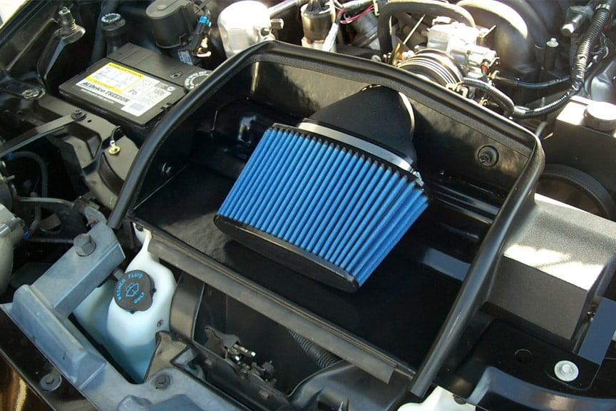

-
No, it doesn't. Not by design. It's for heat only.khyronzx wrote: It definetly helps guide air from the scoop down to the turbo on 84-85's.BLOZ UP.com
It is not recommended to confirm proper installation by driving into walls or other barriers as this could cause personal injury or damage to the vehicle. -
Sure looks like it does to me and others agree. You didn't engineer and/or design it and I don't think you've done any wind tunnel testing on it either. Nor have you quoted or shown any evidence to support your opinion but you stated it such as being factual. Not trying to start anything.
"Beer is proof that god wants us to be happy" - Benjamin Franklin -
[quote]NissanXRMA wrote:Reading comprehension FAILOriginally posted by TearingRaven
1985 Nissan 300ZX 2+2- My first Z, back in the family
1987 Nissan 300ZX Turbo RIP 4/87 - 4/28/2011
Under Construction: 1986 Nissan 300ZX NA2T Slicktop
Originally posted by Tempestas -
[quote]TearingRaven wrote: [quote=NissanXRMA]Originally posted by TearingRavenIt was irrelevant because your heatsheild was STILL IN PLACE. It could have failed for many reasons. Most likely because of age.Originally posted by TearingRaven -
I guess then, by popular opinion--since it looks like it does, then it does.khyronzx wrote: Sure looks like it does to me and others agree. You didn't engineer and/or design it and I don't think you've done any wind tunnel testing on it either. Nor have you quoted or shown any evidence to support your opinion but you stated it such as being factual. Not trying to start anything.
This directs air:

This shields the master cylinder from heat:
[attachment=0:1fyrpyjp]rsz_img_0030.jpg[/attachment:1fyrpyjp]BLOZ UP.com
It is not recommended to confirm proper installation by driving into walls or other barriers as this could cause personal injury or damage to the vehicle. -
It sits directly at the back of the hole in the hood for the scoop. Haven't looked at it in a while but that looks different iirc. I'm going to dig it out of storage when I go to get parts out after work.
"Beer is proof that god wants us to be happy" - Benjamin Franklin -
The point I tried to make is that it's not sealing anything. Saying it "directs air to the turbo" is like saying that your hand "directs water to your mouth" when your fingers are spread apart.khyronzx wrote: It sits directly at the back of the hole in the hood for the scoop. Haven't looked at it in a while but that looks different iirc. I'm going to dig it out of storage when I go to get parts out after work.BLOZ UP.com
It is not recommended to confirm proper installation by driving into walls or other barriers as this could cause personal injury or damage to the vehicle. -
Got ya, but you can't deny removing it will affect where the air entering the engine compartment from the scoop opening goes.
"Beer is proof that god wants us to be happy" - Benjamin Franklin -
I take it nobody has any melted plastic reservoir tanks or melted wires because of removing it then? Looks like it is alright to leave off then. Thanks. -
Mines off since I did the turbo swap, I plan to put it back on this weekend though.perna00 wrote: I take it nobody has any melted plastic reservoir tanks or melted wires because of removing it then? Looks like it is alright to leave off then. Thanks.- VG30DET (HE341) 86 300ZX - 1982 280ZX Turbo - Headered NA 1986 300ZX 2+2 - 2000 Xterra - -
Took mine off. The downpipe off the top mount turbo is wrapped and doesn't get too hot.

Copyright © 2006–. All rights reserved. Privacy Policy